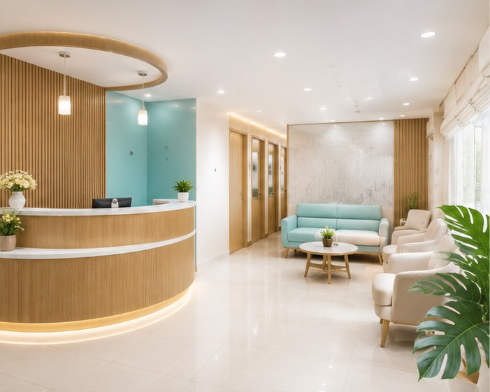

AMAYRA DENTAL EDUCATION
Dental Blog & Education for Patients in Pune
Clear, practical information to help you understand dental symptoms, treatment options, prevention and questions to discuss with your dentist.

FEATURED GUIDES
Start With What You Need to Know
Dental Implants: A Patient Guide
Understand dental implant planning, candidacy, healing and alternatives.
ROOT CANALRoot Canal Treatment: What to Expect
A patient-friendly guide to symptoms, diagnosis, treatment and crowns.
ORTHODONTICSBraces vs Clear Aligners: What Should You Choose?
Compare the factors that can influence an orthodontic treatment decision.
KIDS DENTISTRYYour Child's First Dental Visit: A Parent's Guide
How to prepare children and build healthy dental habits early.
DENTAL PROBLEMSToothache: When Should You See a Dentist?
Learn common causes of tooth pain and signs that need prompt assessment.
DENTAL COSTSDental Treatment Costs in Pune: What Affects the Price?
Why dental treatment estimates vary and what to ask before starting treatment.
GUM HEALTHBleeding Gums: Causes, Prevention & Dental Care
Understand common causes of bleeding gums and when to seek an evaluation.
DENTAL PROBLEMSTooth Sensitivity: Common Causes & What Helps
Cold, hot and sweet sensitivity can have several causes. Learn the basics.
WISDOM TEETHWisdom Teeth: Pain, Problems & Removal
A practical overview of impacted wisdom teeth and treatment decisions.
COSMETIC DENTISTRYTeeth Whitening: What Patients Should Know
Understand professional whitening, expectations, sensitivity and suitability.
TOOTH REPLACEMENTMissing Teeth: Implants, Bridges or Dentures?
Explore common tooth-replacement options and factors in choosing between them.
PREVENTIONDaily Oral Hygiene: A Simple Routine for Better Dental Health
Brushing, interdental cleaning, diet and regular dental check-ups.
LOCAL DENTAL EDUCATION
Questions About Dental Care Near Amanora & Magarpatta?
Use our guides to prepare for a dental consultation at Amayra Polyclinic & Dental Hub in Pune 411028. If you have persistent pain, swelling, bleeding or a dental injury, seek a professional assessment.
Dentist Near AmanoraNEED PERSONALIZED ADVICE?
Education is a Starting Point. Diagnosis Comes Next.
Book a dental consultation at Amayra near Amanora & Magarpatta, Pune.